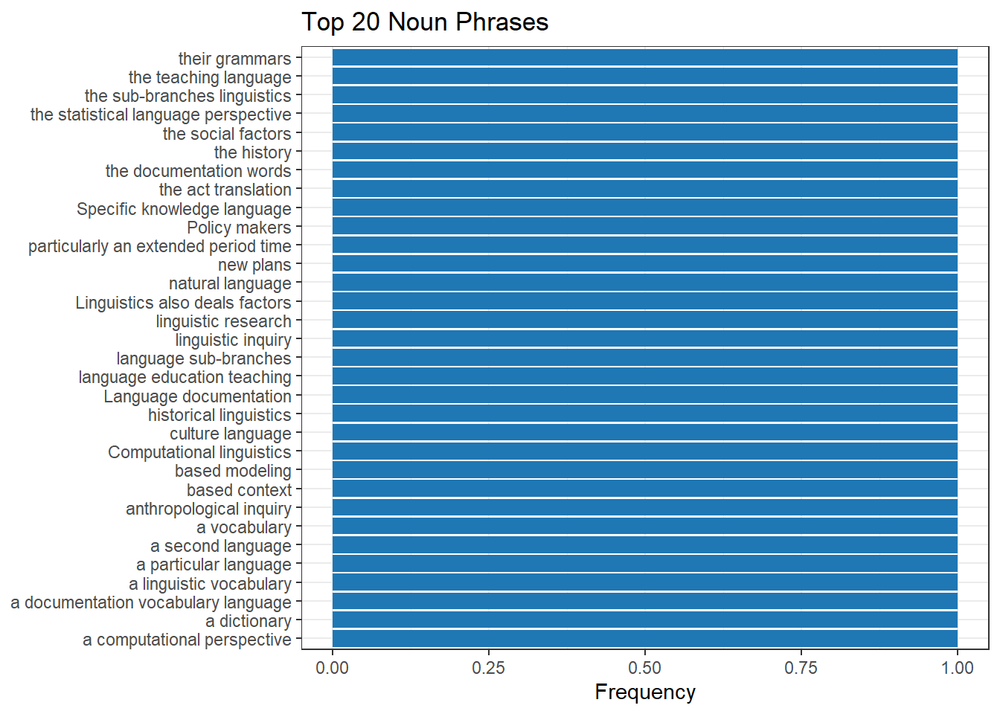
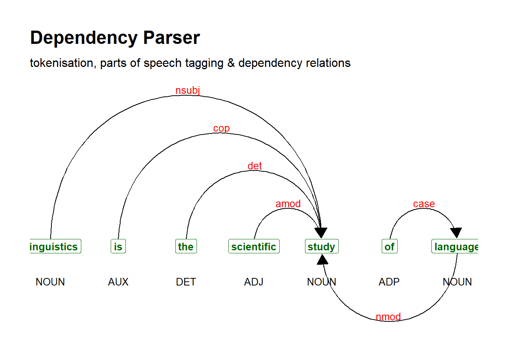
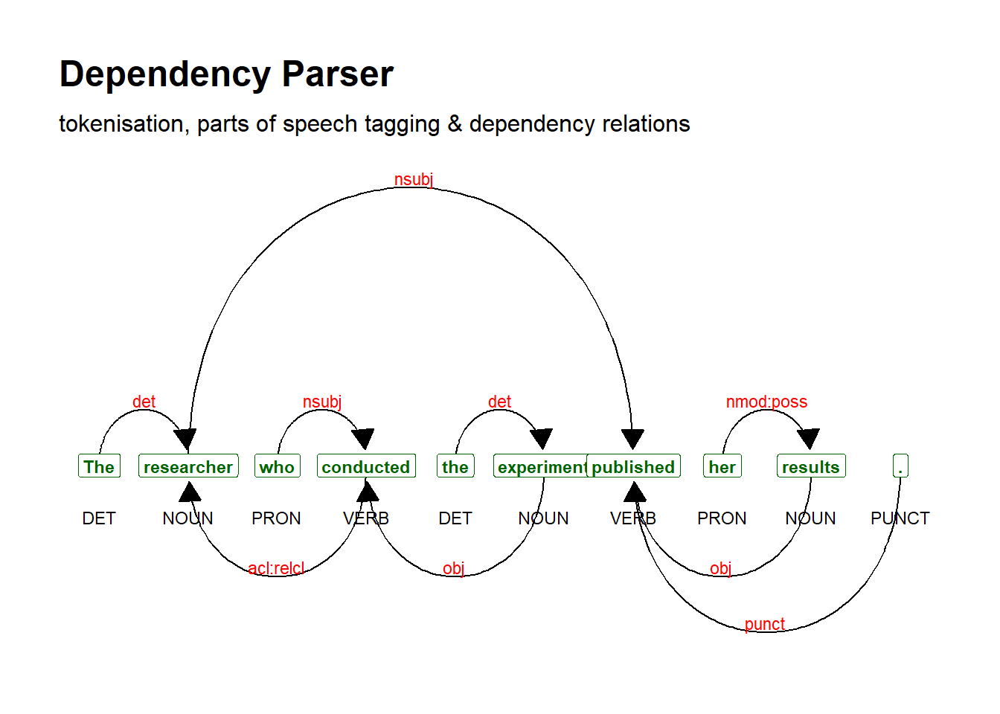
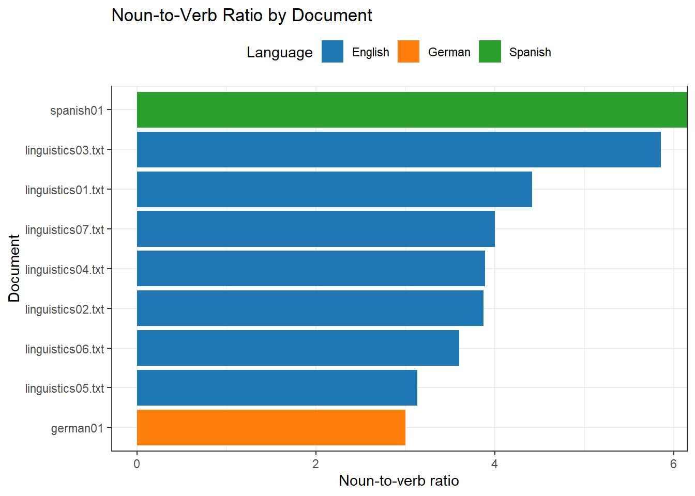

Tag | Description | Examples |
|---|---|---|
CC | Coordinating conjunction | and, or, but |
CD | Cardinal number | one, two, three |
DT | Determiner | a, the |
EX | Existential there | There was a party |
FW | Foreign word | persona non grata |
IN | Preposition or subordinating conjunction | in, of, because |
JJ | Adjective | good, bad, ugly |
JJR | Adjective, comparative | better, nicer |
JJS | Adjective, superlative | best, nicest |
LS | List item marker | a., b., 1. |
MD | Modal | can, would, will |
NN | Noun, singular or mass | tree, chair |
NNS | Noun, plural | trees, chairs |
NNP | Proper noun, singular | John, CIA |
NNPS | Proper noun, plural | Johns, CIAs |
PDT | Predeterminer | all this marble |
POS | Possessive ending | John's, parents' |
PRP | Personal pronoun | I, you, he |
PRP$ | Possessive pronoun | mine, yours |
RB | Adverb | very, enough, not |
RBR | Adverb, comparative | later |
RBS | Adverb, superlative | latest |
RP | Particle | up, off |
SYM | Symbol | CO2 |
TO | to | to |
UH | Interjection | uhm, uh |
VB | Verb, base form | go, walk |
VBD | Verb, past tense | walked, saw |
VBG | Verb, gerund or present participle | walking, seeing |
VBN | Verb, past participle | walked, thought |
VBP | Verb, non-3rd person singular present | walk, think |
VBZ | Verb, 3rd person singular present | walks, thinks |
WDT | Wh-determiner | which, that |
WP | Wh-pronoun | what, who |
WP$ | Possessive wh-pronoun | whose |
WRB | Wh-adverb | how, where, why |
Part-of-Speech Tagging and Dependency Parsing in R

Introduction

This tutorial introduces part-of-speech (POS) tagging and syntactic dependency parsing using R. It is aimed at beginners and intermediate users of R who want to annotate textual data with POS tags, extract noun phrases, visualise parse trees, and work with multi-language corpora. All tools used in this tutorial are pure R packages — no Python, Java runtime, or external software installation is required beyond a standard R environment.
The tutorial covers two core R packages — udpipe (Straka and Straková 2017) and cleanNLP (Arnold 2017) — plus noun phrase extraction routines built directly on udpipe output. udpipe is the recommended starting point: it is fast, covers 64 languages, and requires no external dependencies. cleanNLP offers a tidy-data wrapper around udpipe with convenient multi-document handling. The noun phrase extraction section demonstrates two strategies — dependency traversal and UPOS sequence scanning — that exploit udpipe’s rich output without requiring any additional packages.
Highly recommended complementary resources include the official udpipe vignette available here and the POS and NER tutorial by Wiedemann and Niekler (2017) available here.
Before working through this tutorial, we recommend familiarity with:
- Getting Started with R — R objects, basic syntax, RStudio orientation
- String Processing in R — regular expressions,
stringr - Loading and Saving Data in R — reading text files into R
By the end of this tutorial you will be able to:
- Explain what POS tagging is and why it is useful for linguistic analysis
- Interpret Penn Treebank and Universal Dependencies POS tagsets
- POS-tag English, German, and Spanish texts using
udpipe - Extract noun phrases using dependency traversal and UPOS sequence scanning
- POS-tag text and annotate multiple documents using
cleanNLP - Generate and interpret dependency parse trees
- Apply POS tagging to a multi-text corpus and summarise results across documents and languages
Martin Schweinberger. 2026. Part-of-Speech Tagging and Dependency Parsing in R. The Language Technology and Data Analysis Laboratory (LADAL), The University of Queensland, Australia. url: https://ladal.edu.au/tutorials/pos_tagging/pos_tagging.html (Version 3.1.1). doi: 10.5281/zenodo.19332929.
What Is Part-of-Speech Tagging?
What you will learn: The definition of POS tagging; the difference between rule-based, dictionary-based, and statistical tagging; how the Penn Treebank and Universal Dependencies tagsets differ; and what dependency parsing adds on top of POS tagging
Annotation and Word Classes
Many analyses of language data require that we distinguish different parts of speech (also called word classes or grammatical categories). The process of assigning a word-class label to each token in a text is called part-of-speech tagging, commonly abbreviated as POS-tagging or PoS-tagging.
Consider the sentence:
Jane likes the girl.
Each token can be classified as belonging to a grammatical category:
| Token | POS tag | Category |
|---|---|---|
| Jane | NNP | Proper noun (singular) |
| likes | VBZ | Verb (3rd person singular present) |
| the | DT | Determiner |
| girl | NN | Noun (singular) |
POS tags are not ends in themselves — they are the foundation for a wide range of downstream analyses: extracting noun phrases, studying syntactic change, comparing registers, identifying argument structure, and building features for machine learning classifiers.
How Taggers Work
There are three broad approaches to automatic POS tagging:
Rule-based tagging uses manually crafted morphological and contextual rules — for example, if a word ends in -ment, tag it as NN. These are transparent but brittle: most words are class-ambiguous and the number of rules required grows rapidly.
Dictionary-based tagging looks each word up in a pre-compiled lexicon and assigns the most frequent tag. This works well for known words but fails on out-of-vocabulary items and on class-ambiguous words like studies (verb or noun depending on context).
Statistical tagging — the dominant modern approach — uses a manually annotated training corpus to learn the conditional probability that a given word receives a given POS tag given its surrounding context. Contemporary systems use neural sequence models that achieve close to human inter-annotator agreement on standard benchmarks. All packages covered in this tutorial rely on statistical models.
Penn Treebank and Universal Dependencies
Two tagsets are in widespread use:
The Penn English Treebank (PTB) tagset (Marcus, Santorini, and Marcinkiewicz 1993) uses 36 fine-grained, English-specific tags (e.g. VBZ for 3rd-person singular present verb vs VBP for non-3rd-person). It is used by openNLP and appears in the xpos column of udpipe output.
The Universal Dependencies (UD) tagset (Nivre et al. 2016) provides 17 coarse-grained UPOS tags consistent across all languages — making cross-linguistic comparison straightforward. It appears in the upos column of udpipe and in cleanNLP output.
A comparison of the two tagsets for the most frequent categories:
| PTB tag(s) | UPOS tag | Meaning |
|---|---|---|
| NN, NNS, NNP, NNPS | NOUN / PROPN | Noun / proper noun |
| VB, VBD, VBG, VBN, VBP, VBZ | VERB | Verb |
| JJ, JJR, JJS | ADJ | Adjective |
| RB, RBR, RBS | ADV | Adverb |
| DT, PDT | DET | Determiner |
| IN | ADP / SCONJ | Adposition or subordinating conjunction |
| CC | CCONJ | Coordinating conjunction |
| PRP, PRP$ | PRON | Pronoun |
| MD | AUX | Auxiliary |
Dependency Parsing
Dependency parsing goes beyond POS tagging to identify the syntactic relations between tokens — which word is the head of which dependent, and what grammatical role the dependent plays (subject, object, modifier, etc.). The result is a directed tree rooted at the main predicate.
For the sentence Linguistics is the scientific study of language, a dependency parser identifies study as the root, Linguistics as nsubj, is as cop, the and scientific as det and amod, and language as the complement of the preposition of. Visualising this tree makes the syntactic structure immediately legible and is a powerful tool for teaching syntax and for building features in NLP pipelines.
Q1. Which of the following best describes the key difference between PTB and UPOS tagsets?
Q2. The word studies appears in (a) She studies linguistics and (b) Her studies are ongoing. A good tagger assigns VBZ to (a) and NNS to (b). What does this illustrate?
Setup
Installing Packages
Code
# Run once — comment out after installation
install.packages(c("dplyr", "stringr", "tidyr", "ggplot2", "purrr",
"udpipe", "cleanNLP", "flextable",
"textplot", "here", "checkdown"))No Python, Java, or external software required. All packages are on CRAN and self-contained within R.
Loading Packages
Code
library(dplyr)
library(stringr)
library(tidyr)
library(ggplot2)
library(purrr)
library(udpipe)
library(cleanNLP)
library(flextable)
library(here)
library(checkdown)POS Tagging with udpipe
What you will learn: How to download and load pre-trained udpipe language models; how to POS-tag English, German, and Spanish texts; how to interpret both PTB (xpos) and UPOS (upos) output columns; and how to extract lemmas and dependency relations from the annotated data frame
udpipe (Straka and Straková 2017) was developed at Charles University in Prague and is the recommended starting point for POS tagging in R. It requires no external software and provides:
- pre-trained models for 64 languages
- tokenisation, lemmatisation, POS tagging, and dependency parsing in a single function call
- both PTB (
xpos) and Universal Dependencies (upos) tags simultaneously - the ability to train custom models on CoNLL-U formatted data
Downloading and Loading a Model
Models are downloaded once and saved as .udpipe files. We download the English Web Treebank model:
Code
# Download once — saves an .udpipe file in your working directory
m_eng <- udpipe::udpipe_download_model(language = "english-ewt")After downloading, load the model from disk at the start of each session:
Code
# Adjust the path to wherever you saved the model file
m_eng <- udpipe::udpipe_load_model(
file = here::here("udpipemodels", "english-ewt-ud-2.5-191206.udpipe")
)Tagging an English Text
We load a sample linguistics text and annotate it in a single call:
Code
text <- readLines("tutorials/pos_tagging/data/testcorpus/linguistics06.txt",
skipNul = TRUE) |>
stringr::str_squish() |>
(\(x) x[nchar(x) > 0])() |>
paste(collapse = " ")
substr(text, 1, 300)[1] "Linguistics also deals with the social, cultural, historical and political factors that influence language, through which linguistic and language-based context is often determined. Research on language through the sub-branches of historical and evolutionary linguistics also focus on how languages ch"Code
text_ann <- udpipe::udpipe_annotate(m_eng, x = text) |>
as.data.frame() |>
dplyr::select(doc_id, sentence_id, token_id, token, lemma,
upos, xpos, dep_rel, head_token_id)
head(text_ann, 12) doc_id sentence_id token_id token lemma upos xpos dep_rel
1 doc1 1 1 Linguistics Linguistic NOUN NNS compound
2 doc1 1 2 also also ADV RB advmod
3 doc1 1 3 deals deal NOUN NNS root
4 doc1 1 4 with with ADP IN case
5 doc1 1 5 the the DET DT det
6 doc1 1 6 social social ADJ JJ amod
7 doc1 1 7 , , PUNCT , punct
8 doc1 1 8 cultural cultural ADJ JJ conj
9 doc1 1 9 , , PUNCT , punct
10 doc1 1 10 historical historical ADJ JJ conj
11 doc1 1 11 and and CCONJ CC cc
12 doc1 1 12 political political ADJ JJ conj
head_token_id
1 3
2 3
3 0
4 13
5 13
6 13
7 8
8 6
9 10
10 6
11 12
12 6The most important output columns are:
| Column | Content |
|---|---|
token |
Surface form of the word |
lemma |
Dictionary base form (e.g. ran → run) |
upos |
Universal POS tag — 17 cross-linguistic categories |
xpos |
Penn Treebank POS tag — 36 English-specific categories |
dep_rel |
Dependency relation to head (e.g. nsubj, obj, amod) |
head_token_id |
Token ID of the syntactic head |
Reconstructing a POS-Tagged String
For corpus-style output, tokens and tags can be pasted back into a readable string:
Code
tagged_text <- paste(text_ann$token, "/", text_ann$upos,
collapse = " ", sep = "")
substr(tagged_text, 1, 500)[1] "Linguistics/NOUN also/ADV deals/NOUN with/ADP the/DET social/ADJ ,/PUNCT cultural/ADJ ,/PUNCT historical/ADJ and/CCONJ political/ADJ factors/NOUN that/PRON influence/VERB language/NOUN ,/PUNCT through/ADP which/PRON linguistic/NOUN and/CCONJ language/NOUN -/PUNCT based/VERB context/NOUN is/AUX often/ADV determined/ADJ ./PUNCT Research/VERB on/ADP language/NOUN through/ADP the/DET sub-branches/NOUN of/ADP historical/ADJ and/CCONJ evolutionary/ADJ linguistics/NOUN also/ADV focus/ADV on/SCONJ how/A"Available Language Models
Languages | Models |
|---|---|
Afrikaans | afrikaans-afribooms |
Ancient Greek | ancient_greek-perseus, ancient_greek-proiel |
Arabic | arabic-padt |
Armenian | armenian-armtdp |
Basque | basque-bdt |
Belarusian | belarusian-hse |
Bulgarian | bulgarian-btb |
Buryat | buryat-bdt |
Catalan | catalan-ancora |
Chinese | chinese-gsd, chinese-gsdsimp |
Coptic | coptic-scriptorium |
Croatian | croatian-set |
Czech | czech-cac, czech-pdt |
Danish | danish-ddt |
Dutch | dutch-alpino, dutch-lassysmall |
English | english-ewt, english-gum, english-lines |
Estonian | estonian-edt, estonian-ewt |
Finnish | finnish-ftb, finnish-tdt |
French | french-gsd, french-partut, french-sequoia |
Galician | galician-ctg, galician-treegal |
German | german-gsd, german-hdt |
Gothic | gothic-proiel |
Greek | greek-gdt |
Hebrew | hebrew-htb |
Hindi | hindi-hdtb |
Hungarian | hungarian-szeged |
Indonesian | indonesian-gsd |
Irish Gaelic | irish-idt |
Italian | italian-isdt, italian-partut |
Japanese | japanese-gsd |
Kazakh | kazakh-ktb |
Korean | korean-gsd, korean-kaist |
Kurmanji | kurmanji-mg |
Latin | latin-ittb, latin-perseus |
Latvian | latvian-lvtb |
Lithuanian | lithuanian-alksnis |
Maltese | maltese-mudt |
Marathi | marathi-ufal |
North Sami | north_sami-giella |
Norwegian | norwegian-bokmaal, norwegian-nynorsk |
Old Church Slavonic | old_church_slavonic-proiel |
Old French | old_french-srcmf |
Old Russian | old_russian-torot |
Persian | persian-seraji |
Polish | polish-lfg, polish-pdb |
Portuguese | portuguese-bosque, portuguese-gsd |
Romanian | romanian-nonstandard, romanian-rrt |
Russian | russian-gsd, russian-syntagrus |
Sanskrit | sanskrit-ufal |
Scottish Gaelic | scottish_gaelic-arcosg |
Serbian | serbian-set |
Slovak | slovak-snk |
Slovenian | slovenian-ssj, slovenian-sst |
Spanish | spanish-ancora, spanish-gsd |
Swedish | swedish-lines, swedish-talbanken |
Tamil | tamil-ttb |
Telugu | telugu-mtg |
Turkish | turkish-imst |
Ukrainian | ukrainian-iu |
Upper Sorbian | upper_sorbian-ufal |
Urdu | urdu-udtb |
Uyghur | uyghur-udt |
Vietnamese | vietnamese-vtb |
Wolof | wolof-wtb |
Tagging German and Spanish Texts
The same workflow applies to any of the 64 supported languages:
Code
m_ger <- udpipe::udpipe_download_model(language = "german-gsd")
m_esp <- udpipe::udpipe_download_model(language = "spanish-ancora")Code
m_ger <- udpipe::udpipe_load_model(
file = here::here("udpipemodels", "german-gsd-ud-2.5-191206.udpipe"))
m_esp <- udpipe::udpipe_load_model(
file = here::here("udpipemodels", "spanish-ancora-ud-2.5-191206.udpipe"))Code
gertext <- readLines("tutorials/pos_tagging/data/german.txt",
encoding = "UTF-8") |>
stringr::str_squish() |> paste(collapse = " ")
esptext <- readLines("tutorials/pos_tagging/data/spanish.txt",
encoding = "UTF-8") |>
stringr::str_squish() |> paste(collapse = " ")Code
ger_ann <- udpipe::udpipe_annotate(m_ger, x = gertext) |>
as.data.frame() |>
dplyr::select(sentence_id, token_id, token, lemma,
upos, xpos, dep_rel, head_token_id)
substr(paste(ger_ann$token, "/", ger_ann$upos, collapse = " ", sep = ""), 1, 400)[1] "Sprachwissenschaft/NOUN untersucht/VERB in/ADP verschiedenen/ADJ Herangehensweisen/NOUN die/DET menschliche/ADJ Sprache/NOUN ./PUNCT"Code
esp_ann <- udpipe::udpipe_annotate(m_esp, x = esptext) |>
as.data.frame() |>
dplyr::select(sentence_id, token_id, token, lemma,
upos, xpos, dep_rel, head_token_id)
substr(paste(esp_ann$token, "/", esp_ann$upos, collapse = " ", sep = ""), 1, 400)[1] "La/DET ling��stica/NOUN ,/PUNCT tambi�n/NOUN llamada/ADJ ciencia/NOUN del/ADP lenguaje/NOUN ,/PUNCT es/AUX el/DET estudio/NOUN cient�fico/ADJ de/ADP las/DET lenguas/NOUN naturales/ADJ ./PUNCT"Because all three models use Universal Dependencies UPOS tags, the upos column is directly comparable across languages.
Q3. You annotate a text with udpipe and want to extract all common and proper nouns together with their lemmas. Which column(s) should you use?
Q4. A colleague wants to POS-tag a corpus of Wolof texts. Can udpipe handle this?
Noun Phrase Extraction with udpipe
What you will learn: How to extract noun phrases from udpipe dependency output using two complementary strategies — a dependency-traversal approach that assembles NPs from head nouns and their nominal dependents, and a UPOS-sequence approach that identifies contiguous adjectival/determiner + noun runs; how to compile frequency tables of the resulting NPs; and how to visualise the most frequent NPs
udpipe’s dependency parse output provides everything needed to identify noun phrases without any additional packages. Two approaches are practical and complement each other.
Dependency-traversal NP extraction identifies every noun token as a head, then collects all tokens whose dep_rel marks them as nominal dependents of that head (determiners, adjectives, quantifiers, possessives, compound nouns, and cardinal numbers). This mirrors the linguistic definition of a noun phrase and works for any language with a udpipe model.
UPOS-sequence NP extraction scans token sequences within each sentence for runs of determiner/adjective/numeral tokens immediately followed by a noun, assembling them into multi-word phrases. This is simpler, language-agnostic, and robust to annotation errors.
Strategy 1: Dependency-Traversal NP Extraction
We use the annotations produced earlier in text_ann:
Code
# Dependency relations that indicate a token is a nominal modifier
np_dep_rels <- c("det", "amod", "nmod:poss", "nummod",
"compound", "nmod", "advmod", "appos")
np_dep_extract <- function(ann_df) {
# Find all noun heads (common or proper noun, not punctuation or pronoun)
noun_heads <- ann_df |>
dplyr::filter(upos %in% c("NOUN", "PROPN"))
purrr::map_dfr(seq_len(nrow(noun_heads)), function(i) {
head_row <- noun_heads[i, ]
head_sid <- head_row$sentence_id
head_tid <- as.integer(head_row$token_id)
# Collect dependents within the same sentence that modify this head
deps <- ann_df |>
dplyr::filter(
sentence_id == head_sid,
as.integer(head_token_id) == head_tid,
dep_rel %in% np_dep_rels
)
all_tokens <- dplyr::bind_rows(head_row, deps) |>
dplyr::mutate(token_id = as.integer(token_id)) |>
dplyr::arrange(token_id)
data.frame(
sentence_id = head_sid,
np_head = head_row$token,
noun_phrase = paste(all_tokens$token, collapse = " "),
n_tokens = nrow(all_tokens),
stringsAsFactors = FALSE
)
})
}
np_dep_results <- np_dep_extract(text_ann)
head(np_dep_results, 15) sentence_id np_head noun_phrase n_tokens
1 1 Linguistics Linguistics 1
2 1 deals Linguistics also deals factors 4
3 1 factors the social factors 3
4 1 language language 1
5 1 linguistic linguistic 1
6 1 language language 1
7 1 context based context 2
8 2 language language sub-branches 2
9 2 sub-branches the sub-branches linguistics 3
10 2 linguistics historical linguistics 2
11 2 languages languages 1
12 2 period particularly an extended period time 5
13 2 time time 1
14 3 Language Language 1
15 3 documentation Language documentation 2Filter to multi-word NPs and tabulate frequency:
Code
np_dep_freq <- np_dep_results |>
dplyr::filter(n_tokens > 1) |>
dplyr::count(noun_phrase, sort = TRUE)
head(np_dep_freq, 15) |>
flextable::flextable() |>
flextable::set_table_properties(width = .6, layout = "autofit") |>
flextable::theme_zebra() |>
flextable::fontsize(size = 11) |>
flextable::set_caption(caption = "Most frequent multi-word noun phrases (dependency traversal).") |>
flextable::border_outer()noun_phrase | n |
|---|---|
Computational linguistics | 1 |
Language documentation | 1 |
Linguistics also deals factors | 1 |
Policy makers | 1 |
Specific knowledge language | 1 |
a computational perspective | 1 |
a dictionary | 1 |
a documentation vocabulary language | 1 |
a linguistic vocabulary | 1 |
a particular language | 1 |
a second language | 1 |
a vocabulary | 1 |
anthropological inquiry | 1 |
based context | 1 |
based modeling | 1 |
Strategy 2: UPOS-Sequence NP Extraction
This approach scans each sentence for contiguous sequences of DET, ADJ, or NUM tokens immediately followed by a NOUN or PROPN, grouping them into candidate NPs:
Code
np_seq_extract <- function(ann_df) {
# Work sentence by sentence
ann_df |>
dplyr::filter(!upos %in% c("PUNCT", "SYM", "X", "SPACE")) |>
dplyr::mutate(token_id = as.integer(token_id)) |>
dplyr::group_by(sentence_id) |>
dplyr::group_modify(~ {
df <- dplyr::arrange(.x, token_id)
n <- nrow(df)
nps <- character(0)
i <- 1L
while (i <= n) {
if (df$upos[i] %in% c("NOUN", "PROPN")) {
# Look back for preceding DET/ADJ/NUM in the same run
j <- i - 1L
while (j >= 1L && df$upos[j] %in% c("DET", "ADJ", "NUM", "PRON") &&
df$token_id[j] == df$token_id[j + 1L] - 1L) j <- j - 1L
np_tokens <- df$token[(j + 1L):i]
if (length(np_tokens) > 1L)
nps <- c(nps, paste(np_tokens, collapse = " "))
}
i <- i + 1L
}
if (length(nps) == 0L) return(data.frame(noun_phrase = character(0)))
data.frame(noun_phrase = nps, stringsAsFactors = FALSE)
}) |>
dplyr::ungroup()
}
np_seq_results <- np_seq_extract(text_ann)
head(np_seq_results, 15)# A tibble: 15 × 2
sentence_id noun_phrase
<int> <chr>
1 1 political factors
2 1 which linguistic
3 2 the sub-branches
4 2 evolutionary linguistics
5 2 an extended period
6 3 anthropological inquiry
7 3 the history
8 3 linguistic inquiry
9 3 their grammars
10 4 the documentation
11 4 a vocabulary
12 5 Such a documentation
13 5 a linguistic vocabulary
14 5 a particular language
15 5 a dictionary Code
np_seq_freq <- np_seq_results |>
dplyr::count(noun_phrase, sort = TRUE)
head(np_seq_freq, 15) |>
flextable::flextable() |>
flextable::set_table_properties(width = .6, layout = "autofit") |>
flextable::theme_zebra() |>
flextable::fontsize(size = 11) |>
flextable::set_caption(caption = "Most frequent multi-word noun phrases (UPOS sequence scan).") |>
flextable::border_outer()noun_phrase | n |
|---|---|
Computational linguistics | 1 |
Specific knowledge | 1 |
Such a documentation | 1 |
a computational perspective | 1 |
a dictionary | 1 |
a linguistic vocabulary | 1 |
a particular language | 1 |
a vocabulary | 1 |
an extended period | 1 |
anthropological inquiry | 1 |
evolutionary linguistics | 1 |
foreign language | 1 |
linguistic inquiry | 1 |
linguistic research | 1 |
natural language | 1 |
Visualising the Top NPs
Code
np_dep_freq |>
dplyr::slice_max(n, n = 20) |>
ggplot(aes(x = reorder(noun_phrase, n), y = n)) +
geom_col(fill = "#1f77b4") +
coord_flip() +
labs(title = "Top 20 Noun Phrases",
x = NULL, y = "Frequency") +
theme_bw()
Q5. In the dependency-traversal approach, why is the dep_rel check more linguistically precise than simply grouping consecutive NOUN and ADJ tokens?
Q6. You apply np_dep_extract() to a German text annotated with the german-gsd model. Will it work without modification, and why?
POS Tagging with cleanNLP
What you will learn: How to use cleanNLP as a tidy-data wrapper around udpipe; how to annotate text and access the token table via anno$token; how to annotate multiple documents at once; and how cleanNLP compares to direct udpipe output
cleanNLP (Arnold 2017) is a high-level annotation framework that wraps udpipe behind a consistent tidy-data interface. In this tutorial we use exclusively its udpipe backend, which is fully self-contained within R and requires no external software.
cleanNLP also supports a Python/spaCy backend, but this requires a Python installation and is therefore not covered here. The udpipe backend provides equivalent POS tagging and dependency parsing with no additional setup.
Initialising and Annotating
Code
cleanNLP::cnlp_init_udpipe(model_name = "english")Code
text_cn <- readLines("tutorials/pos_tagging/data/testcorpus/linguistics06.txt",
skipNul = TRUE) |>
stringr::str_squish() |>
paste(collapse = " ")
anno <- cleanNLP::cnlp_annotate(text_cn)Accessing the Token Table
In cleanNLP v3, cnlp_annotate() returns a named list. The token table — containing POS tags, lemmas, and dependency relations — is accessed with $token:
Code
tokens_cn <- anno$token
head(tokens_cn, 12)# A tibble: 12 × 11
doc_id sid tid token token_with_ws lemma upos xpos feats tid_source
<int> <int> <chr> <chr> <chr> <chr> <chr> <chr> <chr> <chr>
1 1 1 1 Linguist… "Linguistics… Ling… NOUN NNS Numb… 3
2 1 1 2 also "also " also ADV RB <NA> 3
3 1 1 3 deals "deals " deal NOUN NNS Numb… 0
4 1 1 4 with "with " with ADP IN <NA> 13
5 1 1 5 the "the " the DET DT Defi… 13
6 1 1 6 social "social" soci… ADJ JJ Degr… 13
7 1 1 7 , ", " , PUNCT , <NA> 8
8 1 1 8 cultural "cultural" cult… ADJ JJ Degr… 6
9 1 1 9 , ", " , PUNCT , <NA> 10
10 1 1 10 historic… "historical " hist… ADJ JJ Degr… 6
11 1 1 11 and "and " and CCONJ CC <NA> 12
12 1 1 12 political "political " poli… ADJ JJ Degr… 6
# ℹ 1 more variable: relation <chr>The key columns are upos, xpos, lemma, tid_source (head token ID), and relation (dependency relation label) — equivalent to the corresponding columns in direct udpipe output, with dependency information already merged in.
Annotating Multiple Documents
The main practical advantage of cleanNLP over direct udpipe is that it natively handles a named character vector of multiple documents, returning a single tidy token table with a doc_id column:
Code
texts_vec <- c(
doc1 = "Linguistics is the scientific study of language.",
doc2 = "Syntax describes the rules governing sentence structure.",
doc3 = "Phonology examines the sound systems of human languages."
)
anno_multi <- cleanNLP::cnlp_annotate(texts_vec)
anno_multi$token |>
dplyr::select(doc_id, sid, tid, token, lemma, upos, relation) |>
head(18)# A tibble: 18 × 7
doc_id sid tid token lemma upos relation
<chr> <int> <chr> <chr> <chr> <chr> <chr>
1 doc1 1 1 Linguistics Linguistic NOUN nsubj
2 doc1 1 2 is be AUX cop
3 doc1 1 3 the the DET det
4 doc1 1 4 scientific scientific ADJ amod
5 doc1 1 5 study study NOUN root
6 doc1 1 6 of of ADP case
7 doc1 1 7 language language NOUN nmod
8 doc1 1 8 . . PUNCT punct
9 doc2 1 1 Syntax Syntax SYM nsubj
10 doc2 1 2 describes describe VERB root
11 doc2 1 3 the the DET det
12 doc2 1 4 rules rule NOUN obj
13 doc2 1 5 governing govern VERB acl
14 doc2 1 6 sentence sentence NOUN compound
15 doc2 1 7 structure structure NOUN obj
16 doc2 1 8 . . PUNCT punct
17 doc3 1 1 Phonology Phonology NOUN nsubj
18 doc3 1 2 examines examine VERB root Comparing cleanNLP and Direct udpipe
| Feature | Direct udpipe |
cleanNLP (udpipe backend) |
|---|---|---|
| Output format | Flat data frame via as.data.frame() |
Named list; token table at $token |
| Dependency info | Separate head_token_id + dep_rel columns |
tid_source + relation merged into token table |
| Multiple documents | Loop + bind_rows() required |
Native: pass named character vector |
| Language models | Explicit download + udpipe_load_model() |
cnlp_init_udpipe(model_name = ...) |
| Annotation quality | Identical | Identical (uses udpipe internally) |
Q7. In cleanNLP v3, how do you access the token table from the object returned by cnlp_annotate()?
Q8. What is the main practical advantage of cleanNLP over direct udpipe when annotating a corpus of 50 text files?
Dependency Parsing
What you will learn: How to visualise syntactic dependency trees using textplot; how to read CoNLL-U formatted output; how to extract subject–verb and verb–object pairs from udpipe output; and how to compare dependency structures across English, German, and Spanish
Visualising a Dependency Parse
The textplot package generates dependency tree visualisations from udpipe-annotated data frames:
Code
sent1 <- udpipe::udpipe_annotate(
m_eng,
x = "Linguistics is the scientific study of language"
) |>
as.data.frame()
sent1 |>
dplyr::select(token, upos, dep_rel, head_token_id) |>
head(8) token upos dep_rel head_token_id
1 Linguistics NOUN nsubj 5
2 is AUX cop 5
3 the DET det 5
4 scientific ADJ amod 5
5 study NOUN root 0
6 of ADP case 7
7 language NOUN nmod 5Code
library(textplot)
textplot::textplot_dependencyparser(sent1, size = 3.5)
A more complex sentence with an embedded relative clause:
Code
sent2 <- udpipe::udpipe_annotate(
m_eng,
x = "The researcher who conducted the experiment published her results."
) |>
as.data.frame()
textplot::textplot_dependencyparser(sent2, size = 3)
CoNLL-U Format
udpipe output maps directly to the CoNLL-U interchange format used by all Universal Dependencies treebanks:
Code
sent1 |>
dplyr::transmute(
ID = token_id,
FORM = token,
LEMMA = lemma,
UPOS = upos,
XPOS = xpos,
HEAD = head_token_id,
DEPREL = dep_rel
) |>
head(8) ID FORM LEMMA UPOS XPOS HEAD DEPREL
1 1 Linguistics Linguistic NOUN NNS 5 nsubj
2 2 is be AUX VBZ 5 cop
3 3 the the DET DT 5 det
4 4 scientific scientific ADJ JJ 5 amod
5 5 study study NOUN NN 0 root
6 6 of of ADP IN 7 case
7 7 language language NOUN NN 5 nmodExtracting Grammatical Relation Pairs
The dep_rel column enables extraction of specific grammatical relations across a full text. Subject–verb pairs:
Code
subj_verb <- text_ann |>
dplyr::filter(dep_rel == "nsubj") |>
dplyr::left_join(
text_ann |> dplyr::select(sentence_id, token_id, head_token = token),
by = c("sentence_id", "head_token_id" = "token_id")
) |>
dplyr::select(sentence_id, subject = token, verb = head_token) |>
dplyr::distinct()
head(subj_verb, 15) sentence_id subject verb
1 1 that influence
2 1 linguistic determined
3 2 languages change
4 3 documentation combines
5 4 Lexicography involves
6 4 that form
7 6 linguistics concerned
8 8 makers workVerb–direct object pairs:
Code
verb_obj <- text_ann |>
dplyr::filter(dep_rel == "obj") |>
dplyr::left_join(
text_ann |> dplyr::select(sentence_id, token_id, head_token = token),
by = c("sentence_id", "head_token_id" = "token_id")
) |>
dplyr::select(sentence_id, verb = head_token, object = token) |>
dplyr::distinct()
head(verb_obj, 15) sentence_id verb object
1 1 influence language
2 3 combines inquiry
3 3 describe languages
4 4 involves documentation
5 4 form vocabulary
6 8 implement plansCross-Language Comparison
Because Universal Dependencies labels are consistent across languages, subject–verb pairs from English, German, and Spanish are directly comparable:
Code
get_subj_verb <- function(ann_df, lang) {
ann_df |>
dplyr::mutate(across(c(token_id, head_token_id, sentence_id), as.integer)) |>
dplyr::filter(dep_rel == "nsubj") |>
dplyr::left_join(
ann_df |>
dplyr::mutate(across(c(token_id, sentence_id), as.integer)) |>
dplyr::select(sentence_id, token_id, head_token = token),
by = c("sentence_id", "head_token_id" = "token_id")
) |>
dplyr::mutate(language = lang) |>
dplyr::select(language, subject = token, verb = head_token)
}
sv_all <- dplyr::bind_rows(
get_subj_verb(text_ann, "English"),
get_subj_verb(ger_ann, "German"),
get_subj_verb(esp_ann, "Spanish")
)
head(sv_all, 18) language subject verb
1 English that influence
2 English linguistic determined
3 English languages change
4 English documentation combines
5 English Lexicography involves
6 English that form
7 English linguistics concerned
8 English makers work
9 German Sprachwissenschaft untersucht
10 Spanish ling��stica estudioQ9. In a Universal Dependencies parse, what value does head_token_id contain for the root token, and why?
Q10. You want to extract direct objects and their governing verbs. Why must the join include both sentence_id AND head_token_id == token_id?
Worked Corpus Example
What you will learn: How to apply POS tagging to a folder of text files; how to summarise POS distributions across documents and languages; how to compute noun-to-verb ratios as a register measure; and how to visualise cross-language POS profiles
Loading and Annotating a Multi-File Corpus
Code
eng_files <- list.files(
"tutorials/pos_tagging/data/testcorpus/",
pattern = "\\.txt$", full.names = TRUE
)
eng_texts <- purrr::set_names(
purrr::map_chr(eng_files, ~ {
readLines(.x, skipNul = TRUE) |>
stringr::str_squish() |>
paste(collapse = " ")
}),
basename(eng_files)
)We annotate all English files at once with cleanNLP:
Code
cleanNLP::cnlp_init_udpipe(model_name = "english")
corpus_ann <- cleanNLP::cnlp_annotate(eng_texts)
eng_tokens <- corpus_ann$token |> dplyr::mutate(language = "English")We annotate the German and Spanish texts directly with udpipe and bind everything together:
Code
ger_tokens <- udpipe::udpipe_annotate(m_ger, x = gertext,
doc_id = "german01") |>
as.data.frame() |>
dplyr::mutate(language = "German") |>
dplyr::select(doc_id, sentence_id, token_id, token, lemma,
upos, xpos, dep_rel, head_token_id, language)
esp_tokens <- udpipe::udpipe_annotate(m_esp, x = esptext,
doc_id = "spanish01") |>
as.data.frame() |>
dplyr::mutate(language = "Spanish") |>
dplyr::select(doc_id, sentence_id, token_id, token, lemma,
upos, xpos, dep_rel, head_token_id, language)
full_corpus <- dplyr::bind_rows(eng_tokens, ger_tokens, esp_tokens)POS Distributions by Language
Code
pos_summary <- full_corpus |>
dplyr::filter(!is.na(upos), !upos %in% c("PUNCT", "SYM", "X")) |>
dplyr::count(language, doc_id, upos) |>
dplyr::group_by(language, doc_id) |>
dplyr::mutate(prop = n / sum(n)) |>
dplyr::ungroup()Code
pos_lang <- pos_summary |>
dplyr::group_by(language, upos) |>
dplyr::summarise(mean_prop = mean(prop), .groups = "drop")
ggplot(pos_lang, aes(x = reorder(upos, -mean_prop),
y = mean_prop, fill = language)) +
geom_col(position = "dodge") +
scale_fill_manual(values = c("English" = "#1f77b4",
"German" = "#ff7f0e",
"Spanish" = "#2ca02c")) +
labs(title = "POS Profile by Language",
x = "UPOS Category", y = "Mean proportion of tokens",
fill = "Language") +
theme_bw() +
theme(axis.text.x = element_text(angle = 45, hjust = 1),
legend.position = "top")
Noun-to-Verb Ratio
The noun-to-verb ratio (NVR) is a widely used measure of nominal density in register analysis (Biber 1995). Academic and technical texts tend to show high NVR because they pack propositional content into noun phrases rather than finite clauses.
Code
nvr <- full_corpus |>
dplyr::filter(upos %in% c("NOUN", "PROPN", "VERB")) |>
dplyr::count(language, doc_id, upos) |>
tidyr::pivot_wider(names_from = upos, values_from = n,
values_fill = 0) |>
dplyr::mutate(nouns = NOUN + PROPN, nvr = nouns / VERB)
ggplot(nvr, aes(x = reorder(doc_id, nvr), y = nvr, fill = language)) +
geom_col() +
scale_fill_manual(values = c("English" = "#1f77b4",
"German" = "#ff7f0e",
"Spanish" = "#2ca02c")) +
coord_flip() +
labs(title = "Noun-to-Verb Ratio by Document",
x = "Document", y = "Noun-to-verb ratio", fill = "Language") +
theme_bw() +
theme(legend.position = "top")
Most Frequent Noun Lemmas per Language
Code
full_corpus |>
dplyr::filter(upos == "NOUN") |>
dplyr::count(language, lemma, sort = TRUE) |>
dplyr::group_by(language) |>
dplyr::slice_max(n, n = 10) |>
dplyr::ungroup() |>
flextable::flextable() |>
flextable::set_table_properties(width = .65, layout = "autofit") |>
flextable::theme_zebra() |>
flextable::fontsize(size = 11) |>
flextable::set_caption(caption = "Top 10 noun lemmas per language.") |>
flextable::border_outer()language | lemma | n |
|---|---|---|
English | language | 36 |
English | study | 10 |
English | speech | 7 |
English | linguistic | 6 |
English | rule | 6 |
English | documentation | 5 |
English | community | 4 |
English | deal | 4 |
English | parole | 4 |
English | system | 4 |
German | Herangehensweisen | 1 |
German | Sprache | 1 |
German | Sprachwissenschaft | 1 |
Spanish | ciencia | 1 |
Spanish | estudio | 1 |
Spanish | lengua | 1 |
Spanish | lenguaje | 1 |
Spanish | ling��stica | 1 |
Spanish | tambi�n | 1 |
Q11. A document has NVR = 3.5. What register would you expect to produce the highest NVR, and why?
Q12. You want to add Dutch texts to the corpus analysis. What steps are needed, and will the downstream code need to change?
Summary and Further Reading
This tutorial introduced POS tagging and dependency parsing using three self-contained, pure-R packages — no Python or external software required.
We began with the conceptual foundations: the difference between PTB and UPOS tagsets, the three approaches to automatic tagging, and the distinction between POS tagging and dependency parsing.
udpipe was demonstrated as the recommended starting point. A single udpipe_annotate() call produces tokenisation, lemmatisation, UPOS and PTB tags, and dependency relations for 64 languages. English, German, and Spanish examples illustrated the cross-linguistic consistency of Universal Dependencies.
The noun phrase extraction section demonstrated two pure-udpipe strategies: dependency traversal, which assembles NPs by following head–dependent links in the parse tree, and UPOS sequence scanning, which identifies contiguous determiner/adjective/numeral + noun runs. Both approaches work for all 64 udpipe languages without additional packages.
cleanNLP was presented as a tidy-data convenience wrapper around udpipe. In v3, cnlp_annotate() returns a named list and the token table is accessed via anno$token. Its key advantage is native multi-document handling: passing a named character vector returns a single token table with a doc_id column, removing the need for a manual loop.
The dependency parsing section demonstrated tree visualisation with textplot, CoNLL-U format construction, and extraction of subject–verb and verb–object pairs with cross-language comparison.
The worked corpus example brought all tools together: annotating a multi-file, multi-language corpus, computing POS distribution profiles and noun-to-verb ratios, and visualising cross-language differences in grammatical style.
Further reading: Manning (2008) provides a comprehensive introduction to NLP with a strong linguistic grounding. Nivre et al. (2016) is the key reference for Universal Dependencies. Biber (1995) demonstrates large-scale POS-based register analysis. The official udpipe documentation at bnosac.github.io/udpipe covers model training and all annotation options in detail.
Citation & Session Info
Martin Schweinberger. 2026. Part-of-Speech Tagging and Dependency Parsing in R. The Language Technology and Data Analysis Laboratory (LADAL), The University of Queensland, Australia. url: https://ladal.edu.au/tutorials/pos_tagging/pos_tagging.html (Version 3.1.1). doi: 10.5281/zenodo.19332929.
@manual{martinschweinberger2026partofspeech,
author = {Martin Schweinberger},
title = {Part-of-Speech Tagging and Dependency Parsing in R},
year = {2026},
note = {https://ladal.edu.au/tutorials/pos_tagging/pos_tagging.html},
organization = {The Language Technology and Data Analysis Laboratory (LADAL), The University of Queensland, Australia},
edition = {3.1.1}
doi = {10.5281/zenodo.19332929}
}Code
sessionInfo()R version 4.4.2 (2024-10-31 ucrt)
Platform: x86_64-w64-mingw32/x64
Running under: Windows 11 x64 (build 26200)
Matrix products: default
locale:
[1] LC_COLLATE=English_United States.utf8
[2] LC_CTYPE=English_United States.utf8
[3] LC_MONETARY=English_United States.utf8
[4] LC_NUMERIC=C
[5] LC_TIME=English_United States.utf8
time zone: Australia/Brisbane
tzcode source: internal
attached base packages:
[1] stats graphics grDevices datasets utils methods base
other attached packages:
[1] textplot_0.2.2 here_1.0.2 cleanNLP_3.1.0 udpipe_0.8.11
[5] purrr_1.2.1 ggplot2_4.0.2 tidyr_1.3.2 stringr_1.6.0
[9] dplyr_1.2.0 flextable_0.9.11 checkdown_0.0.13
loaded via a namespace (and not attached):
[1] gtable_0.3.6 xfun_0.56 htmlwidgets_1.6.4
[4] ggrepel_0.9.8 lattice_0.22-6 vctrs_0.7.2
[7] tools_4.4.2 generics_0.1.4 tibble_3.3.1
[10] pkgconfig_2.0.3 Matrix_1.7-2 data.table_1.17.0
[13] RColorBrewer_1.1-3 S7_0.2.1 uuid_1.2-1
[16] lifecycle_1.0.5 compiler_4.4.2 farver_2.1.2
[19] textshaping_1.0.0 ggforce_0.4.2 graphlayouts_1.2.2
[22] codetools_0.2-20 litedown_0.9 fontquiver_0.2.1
[25] fontLiberation_0.1.0 htmltools_0.5.9 yaml_2.3.10
[28] pillar_1.11.1 MASS_7.3-61 openssl_2.3.2
[31] cachem_1.1.0 viridis_0.6.5 fontBitstreamVera_0.1.1
[34] commonmark_2.0.0 tidyselect_1.2.1 zip_2.3.2
[37] digest_0.6.39 stringi_1.8.7 labeling_0.4.3
[40] polyclip_1.10-7 rprojroot_2.1.1 fastmap_1.2.0
[43] grid_4.4.2 cli_3.6.5 magrittr_2.0.4
[46] patchwork_1.3.0 tidygraph_1.3.1 ggraph_2.2.1
[49] utf8_1.2.6 withr_3.0.2 gdtools_0.5.0
[52] scales_1.4.0 rmarkdown_2.30 officer_0.7.3
[55] igraph_2.2.2 gridExtra_2.3 askpass_1.2.1
[58] ragg_1.5.1 memoise_2.0.1 evaluate_1.0.5
[61] knitr_1.51 viridisLite_0.4.2 markdown_2.0
[64] rlang_1.1.7 Rcpp_1.1.1 glue_1.8.0
[67] tweenr_2.0.3 BiocManager_1.30.27 xml2_1.3.6
[70] renv_1.1.7 rstudioapi_0.17.1 jsonlite_2.0.0
[73] R6_2.6.1 systemfonts_1.3.1 This tutorial was re-developed with the assistance of Claude (claude.ai), a large language model created by Anthropic. Claude was used to help revise the tutorial text, structure the instructional content, generate the R code examples, and write the checkdown quiz questions and feedback strings. All content was reviewed, edited, and approved by the author (Martin Schweinberger), who takes full responsibility for the accuracy and pedagogical appropriateness of the material. The use of AI assistance is disclosed here in the interest of transparency and in accordance with emerging best practices for AI-assisted academic content creation.